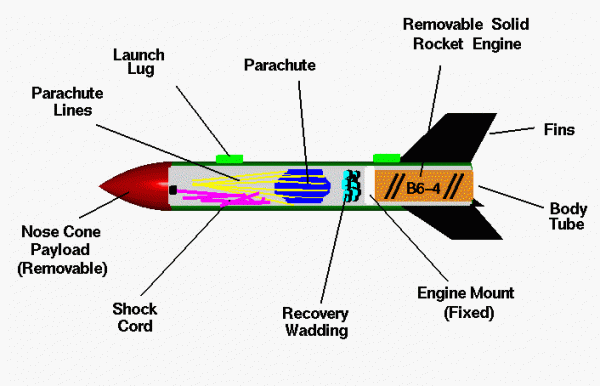
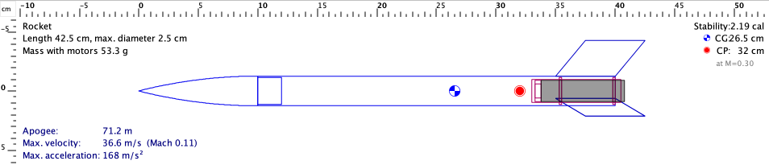

Taller 2: ensamblar y revisar el cohete
Montar el conjunto con referencias claras y actualizar sus medidas y masas finales.
Antes de unir: piezas y revisión
El segundo taller presencial dura cuatro horas. Deben llegar las piezas principales, los componentes comerciales elegidos y el plano revisado. El montaje empieza con una presentación del conjunto y una identificación de las uniones. Pegar piezas que todavía no se han presentado elimina oportunidades sencillas de corregir el diseño.

Preparación de mesa
| Elemento | Qué verificar |
|---|---|
| Piezas del equipo | Identificación y revisión |
| Útiles | Compatibilidad con el tubo |
| Componentes comerciales | Referencia y documentación |
| Plano | Posiciones y cotas legibles |
| Registro | Fotos y mediciones antes de cerrar |
El docente define el proceso de unión adecuado a los materiales y las instrucciones del conjunto. La sesión no usa una receta universal de adhesivo, tiempos o preparación para todas las piezas. Se conserva la información del producto y del método empleado.
Montar cambia la condición de las piezas. Una unión puede ocultar una referencia, impedir una medición o reducir el acceso a un interior. Antes de iniciar, el equipo ordena la secuencia en la mesa y comprueba qué información debe conservar en cada etapa. No se busca terminar deprisa y reconstruir luego lo ocurrido. El expediente puede ser sencillo: piezas identificadas, vista previa, detalle de interfaces y registro de las modificaciones realizadas.
Montar sin perder las referencias
Una referencia puede ser el extremo del cuerpo, una línea longitudinal o una cara del útil. El equipo la mantiene desde el plano hasta la pieza. Si cada aleta se coloca con una referencia diferente, pequeñas diferencias pueden acumularse. La comprobación posterior exige saber desde dónde se tomó cada medida.
- Presenta el conjunto y confirma el orden de montaje con el docente.
- Marca las referencias que necesitan conservarse y comprueba su correspondencia con el plano.
- Usa el útil aprobado para presentar las aletas. Revisa vista lateral y posterior antes de fijar.
- Realiza las uniones con el proceso indicado para los materiales y el conjunto comercial.
- Respeta el tiempo necesario del proceso. Mantén el conjunto apoyado según la pauta del taller.
El útil se mueve durante el montaje
El útil conserva bien los ángulos cuando está suelto, pero se desplaza al manipular las piezas.
Razonamiento del caso
La presentación inicial no basta. Se revisa cómo se sostiene la referencia durante el proceso. El equipo detiene y corrige la condición antes de aceptar la posición de las piezas.
Los roles rotan para que todos participen en al menos una comprobación de medida y una explicación del proceso.
El proceso de unión tiene condiciones que pertenecen al material y al producto utilizado. La hora de la clase no determina cuándo una unión ya puede manipularse o recibir otra tarea. El docente organiza el orden para que las comprobaciones no alteren prematuramente el montaje. Si una condición requiere más tiempo, queda registrada y la siguiente revisión se hace cuando corresponda al proceso real.
El eje del cuerpo y las marcas del plano ayudan a mantener la posición prevista. Un útil aproxima las piezas a esas referencias y permite observar el conjunto mientras se presenta. El proceso de unión lo determina el material y el producto elegido. Se respetan sus instrucciones y sus tiempos. Al terminar una etapa, el equipo comprueba la geometría que todavía puede ver y deja constancia antes de continuar con otra que pueda ocultarla.
Revisar lo que luego quedará oculto

Algunas conexiones dejan de verse después de cerrar el cuerpo. Antes de hacerlo se registra una fotografía y se comprueba que corresponden al sistema previsto. Un archivo digital no muestra automáticamente el estado de una unión real ni demuestra que una pieza comercial sea la referencia correcta.
Comprobaciones antes de cerrar
| Zona | Evidencia de taller |
|---|---|
| Soporte comercial | Referencia y presentación según instrucciones |
| Conexiones de recuperación | Correspondencia con el sistema elegido |
| Acceso | Recorrido visible y sin interferencia observada |
| Elementos interiores | Posición e identificación |
| Cambios respecto al plano | Actualización o corrección registrada |
Si aparece una pieza sustituta, no se da por equivalente únicamente porque quepa. El docente revisa su función y documentación. Si no puede cerrarse una condición importante, el equipo conserva el montaje en un estado que permita corregirla.
Medir el conjunto ensamblado
La masa final incluye materiales que al principio no estaban: uniones, acabado y pequeños componentes. Por eso no siempre coincide con la suma inicial del archivo. Para actualizar el modelo, se define claramente si la medición incluye o excluye el componente comercial que todavía no está instalado para la operación.
Diferencia entre presupuesto y objeto
Ejercicio: el modelo preliminar sin motor sumaba 42 g. El conjunto físico, en la misma condición de comparación, pesa 49 g.
Razonamiento del caso
Hay 7 g de diferencia. Revisa elementos omitidos y cantidades añadidas antes de ajustar el archivo. El dato no prueba una falla de la balanza ni se corrige aumentando a ciegas una masa en el programa.
- Identifica la condición exacta del conjunto que se pesa.
- Registra masa, longitud y referencias relevantes del montaje.
- Busca diferencias respecto al plano o al presupuesto de piezas.
- Actualiza el archivo o las masas representadas sin duplicarlas.
- Guarda una configuración final preliminar con comentario del taller.
Si el proceso de unión o el acabado todavía requiere tiempo, se indica el estado y se programa la comprobación final. La hora de cierre de la clase no cambia las condiciones del material.
La masa final puede diferir del presupuesto porque aparecen uniones, accesorios y acabados. Primero se verifica que ambas cifras incluyan los mismos componentes. Después se identifican las contribuciones que se pueden pesar o documentar. Si no se conoce el reparto exacto de una diferencia, se registra esa limitación. El modelo se actualiza con la mejor información disponible sin inventar una distribución interior para hacer coincidir una cifra.
Cuatro horas para montar y comprobar
Horario del taller 2
| Minutos | Trabajo | Registro |
|---|---|---|
| 0–30 | Piezas, plano y orden de montaje | Lista de entrada |
| 30–120 | Presentación y ensamblaje supervisado | Fotos de referencias y uniones |
| 120–180 | Comprobaciones de banco | Recuperación y acceso |
| 180–240 | Medidas, archivo y pendientes | Configuración revisada |
El equipo comprueba la recuperación en el estado inerte que corresponda y con el método del docente. Revisa las vistas de alineación y las superficies funcionales. Una revisión que descubre un pendiente aporta información útil; no debe ocultarse para anunciar que todos terminaron al mismo tiempo.
Una pieza cambia después de ensamblar
La nariz que entraba en la muestra ahora se traba en el conjunto terminado.
Razonamiento del caso
Revisa qué cambió: borde, acabado, deformación o interferencia. Conserva el resultado anterior y vuelve a comprobar la interfaz actual. El dato de la muestra no garantiza el nuevo estado.
El responsable revisa cada conjunto y deja constancia de lo que todavía debe corregirse antes de la preparación de la jornada.
Una fotografía interior antes de cerrar permite revisar algo que más tarde no se ve. Debe identificar el equipo y la zona, y mostrar la referencia que importa. Una imagen demasiado cercana sin contexto puede ser tan poco útil como una vista lejana. El equipo conserva una vista general y un detalle para las interfaces principales, de modo que el expediente describa el montaje que de verdad realizó.
Prototipo terminado y expediente actualizado
Entregas del segundo taller
| Entrega | Comprobación |
|---|---|
| Objeto ensamblado | Identificación del equipo |
| Fotos de montaje | Vistas útiles e interiores registrados |
| Masa y dimensiones | Condición de medida explícita |
| Archivo actualizado | Coincide con la revisión construida |
| Pendientes | Acción y responsable definidos |
El prototipo puede estar ensamblado y aún no aceptado para vuelo. Entre ambos estados hay revisión de configuración, condiciones de operación y cierre de pendientes. El alumnado aprende esa diferencia sin convertirla en un trámite abstracto: cada pendiente se relaciona con una pieza o una comprobación concreta.
Qué explica el equipo al mostrar su cohete
“Estas aletas se alinearon con este útil. Esta es la masa medida del conjunto. Aquí se observa el recorrido de recuperación. Este pendiente necesita revisión”.
Razonamiento del caso
La explicación relaciona decisiones y evidencias. Permite que el docente revise el proyecto sin reconstruir toda su historia a partir de una fotografía final.
Conserva una copia del archivo de cierre del taller. La siguiente comparación en RockSim utilizará esa misma geometría y masas, para estudiar una segunda representación del objeto construido.
Preguntas de cierre
¿Ensamblado equivale a aceptado para vuelo?
No. Falta la revisión de configuración y condiciones.
¿Qué condición debe acompañar una masa total?
Qué componentes incluye y el estado del conjunto.
¿Qué se revisa si cambió el encaje?
La interfaz actual y lo que se modificó después de la muestra.
Entrega
Cohete ensamblado, fotos, medidas y archivo revisado.
Bibliografía y procedencia
[NASA] NASA Glenn. Model Rockets.
[NAR] National Association of Rocketry. Model Rocket Safety Code.
[OR1] OpenRocket. Basic Rocket Design.
[PR1] Prusa Research. Modeling with 3D printing in mind.